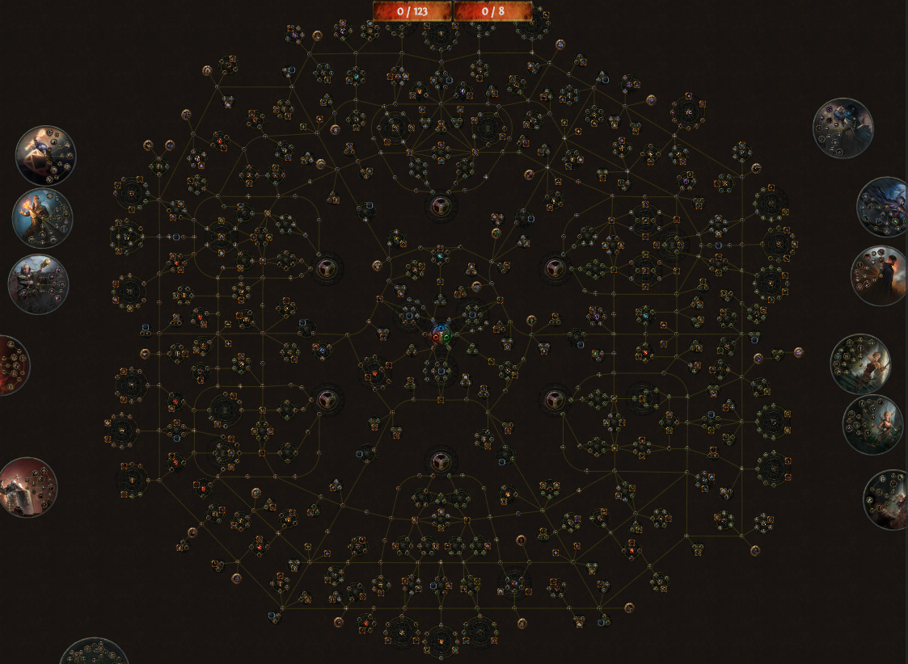
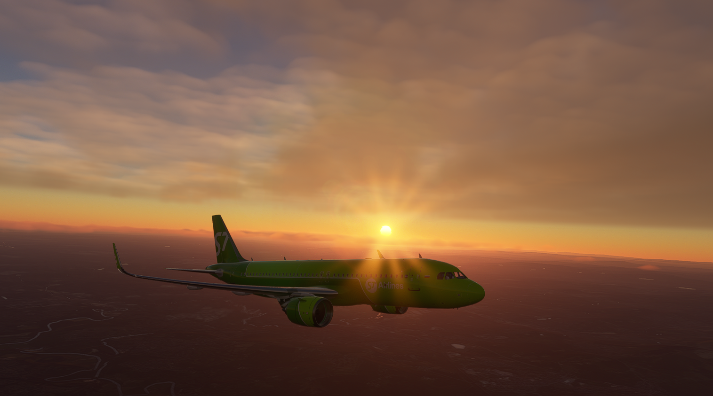
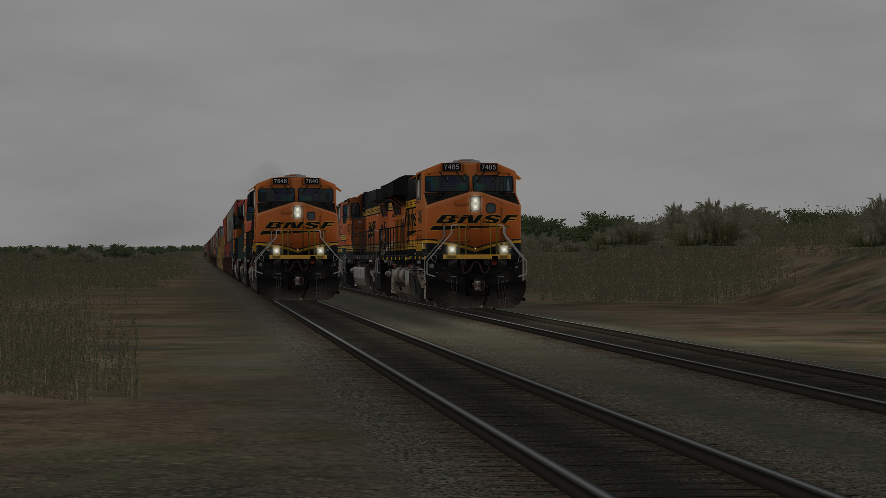
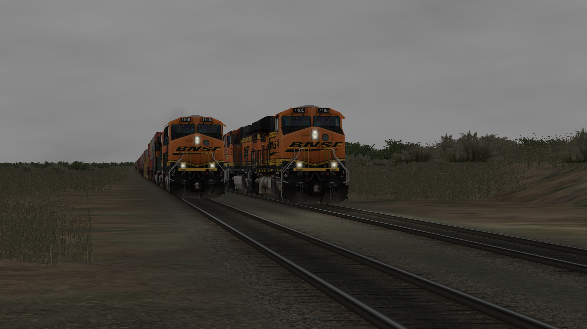

Gaming
Gaming is one of my favorite activities because it allows me to relax and focus on something I enjoy doing. It is really nice for destressing after a long day of school.
My favorite games ranked:
- Diablo 4
- Path of Exile
- Gunner Heat, PC
- World of Tanks
- MSFS 2020
- OMSI 2
Why is Diablo 4 my favorite game?
Diablo 4 is my favorite game because of the fact it is a loot based game. I love games where to progress, you have to go through dungeons, quests, and other things to find better gear which you can use to level up. Diablo 4 has a ton of different pieces of gears and abilities that allow you to build a wide variety of characters, all with their own set of abilities and specs, or specializations. Diablo 4 follows my idea of the perfect game.
Properties of my perfect game
- Loot-based
- Wide variety of content
- Replayability
- Challenging
This is why I love games like Path of Exile as well. They follow a very nice progression path that makes actually playing the game enjoyable. They aren't too challenging but aren't too easy. Overall, it really helps to make me want to come back to the game. The reason content is so important is because it is what you are actually interacting with. A game with a lot of content is a lot better because it keeps players coming back without them having to do the same thing over and over.
Path of Exile is also a good example of this. Take ONE of the class skill trees for example:
Each one of those nodes affect the way your character plays. These skill trees are unique for each class as well. The skill tree doesn't include abilities either, which are found threw gems that you socket into weapons and armor. There are hundreds of gems you can use to get abilities, and also buff those abilities too.
Sometimes however, and this is why I prefer Diablo 4 over PoE, these skill trees, skill gems, and more can be extremely overwhelming. Diablo 4 to me is kind of like Path of Exile for casuals. Although both games are great, Diablo 4 is just easier to play after a long day because it doesn't require as much thinking as Path of Exile.
Crafting
Not all games have crafting systems, but it is definetly something I look for when finding games to play. Once again, PoE is a great example of this. Path of Exile uses tons of different materials, orbs, currencies, and more to create the perfect item. Path of Exile has 20 different currencies! Crafting is important to me with games because it adds another layer of complexity which can be really fun to learn and take advantage of to create insanely overpowered items.
Simulator Games
Apart from action rpgs, I really enjoying simulators. I love simulating different lines of work such as train engineer, truck driver, airline pilot, and bus driver. I find it really interesting being able to pretend you are working as another person.
My favorite simulators:
- OMSI 2: Bus Simulator
- Run8 & Open Rails: Train Simulator
- MSFS 2020: Flight Simulator
- American Truck Simulator
As described in the list, those are my preferred simulators for trucking, bus driving, trains, and flight. All of these simulators hold sentimental value as well because my dad is a very heavy simulator player, and he introduced me to almost all of these games. I don't know how to describe it, but I just really enjoy simulator games. Here are some screenshots I've taken from the games:
 


 Michael S. | Written: 8/29/24 | Home
Michael S. | Written: 8/29/24 | Home